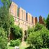
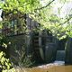
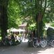
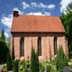
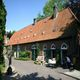

Klosterbezirk
Hören Sie die Informationen
Player integrierenÜber den Klosterbezirk
Im Jahre 1232 errichteten Zisterziensermönche ein Kloster im Oldenburger Land, aus dem später die Ortschaft Hude hervorging. Die stattliche und gut erhaltene Klosterruine ist ein Denkmal von nationaler Bedeutung.
Der malerische Klosterbezirk liegt zentral am Ortskern und lädt zum Entdecken und Entspannen ein.
Im Klosterbezirk zeugen heute rund 780 Jahre nach dem Bau des Zisterzienserklosters noch Fragmente von dem ehemals bedeutenden Bauwerk.
Zum Klosterbezirk gehören
-

Klosterruine - INHALT!
Altehrwürdige Klostermauern erinnern an bedeutungsvolle Geschichte.
-

Wassermühle
In der ehemaligen Wassermühle in der noch in den 50er Jahren unseres Jahrhunderts Korn gemahlen wurde, gibt es heute das Standesamt und eine tolle Location zum Feiern.
-

Klosterschenke und Remise
Auch ist wieder Leben in die denkmalgeschützte Remise eingekehrt. Schöne Dinge für Haus & Garten, ein Wein-Depot, Antike Möbel und „Feiern in kleiner Runde“ sind die neuen Anziehungspunkte des Klosterbezirks.
-

Torkapelle
Die ehemalige Torkapelle ist heute evangelische Pfarrkirche. In der Elisabethkirche ist freigelegte mittelalterliche Malerei und ein Altarretabel mit Schnitzwerk aus dem 14. Jahrhundert zu bewundern.
-

Museum
In einem Tanzsaal aus der Zeit um 1900, zwischen Klosterruine und Klosterschänke gelegen, haben die Freunde des Klosters Hude e.V. ein kleines Museum eingerichtet.